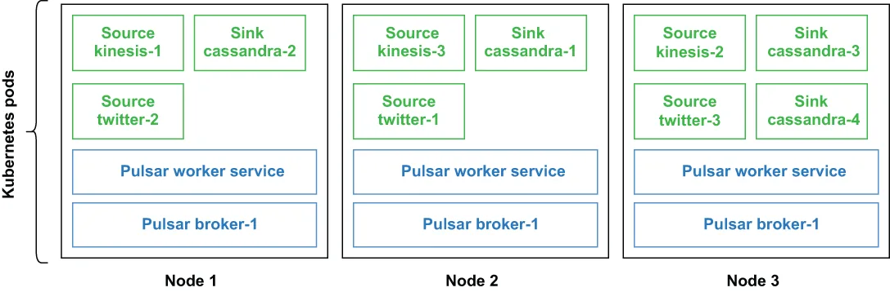

As specialized Pulsar functions, IO connectors utilize the same runtime environment that provides all the benefits of the Pulsar Functions framework, including fault tolerance, parallelism, elasticity, load balancing, on-demand updates, and much more. With respect to deployment options, you can have the Pulsar IO connector run on your local development machine, in localrun mode, inside the function workers in the Pulsar cluster, or in cluster mode. In the previous section, we were using the LocalRunner to run our connector in localrun mode. In this section, I will walk you through the process of running the DirectorySource connector we developed in cluster mode.
作为专门化的 Pulsar function，IO 连接器使用的是同一个运行时环境，后者提供了 Pulsar Functions 框架的全部好处，包括容错、并行性、弹性、负载均衡、按需更新等等。就部署选项而言，你可以让这个 Pulsar IO 连接器运行在你的本地开发机上（即 localrun 模式），也可以让它运行在 Pulsar 集群内的 function worker 中（即 集群模式）。在上一节中，我们使用的是 LocalRunner 以 localrun 模式来运行我们的连接器。在本节中，我将带你走完以集群模式运行我们所开发的 DirectorySource 连接器的全过程。

Figure 5.5 Pulsar IO connector deployment on Kubernetes
图 5.5 Pulsar IO 连接器在 Kubernetes 上的部署
Figure 5.5 shows a cluster-mode deployment inside a Kubernetes environment, where each connector runs in its own container alongside other non-connector function instances. In cluster mode, Pulsar IO connectors leverage the fault-tolerance capability offered by the Pulsar Functions runtime scheduler to handle failures. If a connector is running on a machine that fails, Pulsar will automatically attempt to restart the task on one of the remaining running nodes in the cluster.
图 5.5 展示了一个在 Kubernetes 环境中的集群模式部署，其中每个连接器都在自己的容器中运行，与那些非连接器的 function 实例并存。在集群模式下，Pulsar IO 连接器借助 Pulsar Functions 运行时调度器所提供的容错能力来处理故障。如果某个连接器正运行在某台发生故障的机器上，Pulsar 会自动尝试在集群中其余仍在运行的某个节点上重启这个任务。
5.4.1 创建和删除连接器
5.4.2 调试已部署的连接器